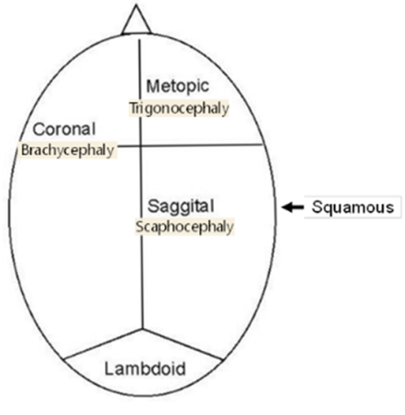
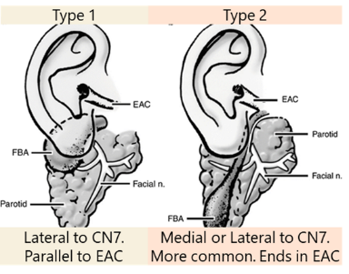
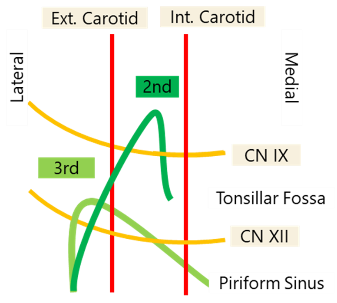
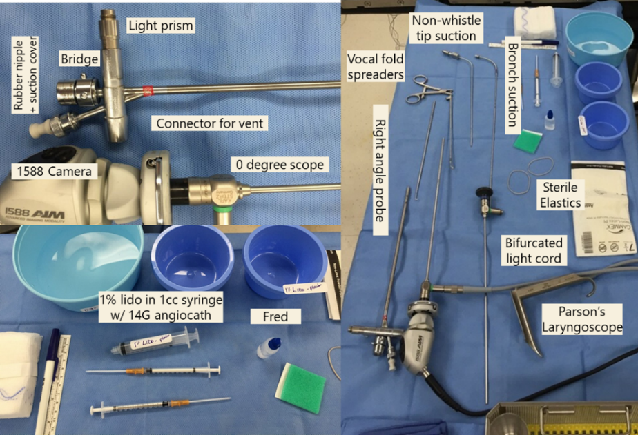
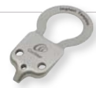
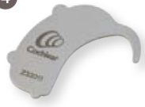
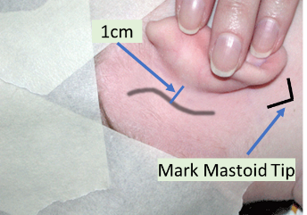
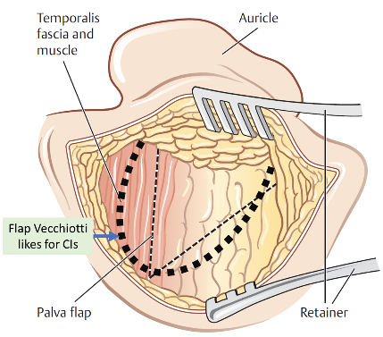
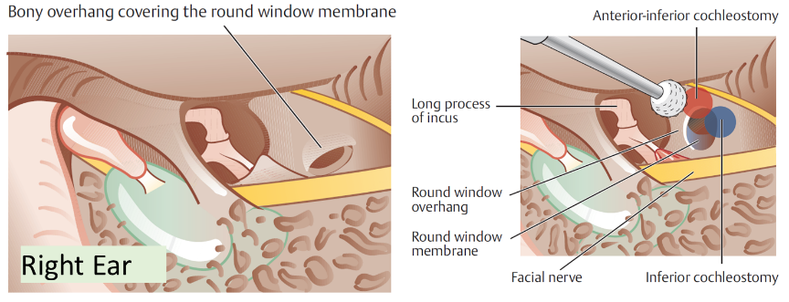

Pediatric Otolaryngology Clinic Guide
New patient visit format
_____ is a __-year-old patient born full term. No NICU admission, no intubation, passed NBHS. No prenatal, perinatal, or postnatal problems. The patient presents to clinic today with __
F/U visit format
_____ is a __-year-old patient who is followed by this clinic for __. He/She was last seen on ___, at that time ___ was noted and the plan for the patient was ___. Today, the patient returns. Since then ___
NEED to ASK
- Weight
- Pregnancy
- Birth Hx (NICU stay / Newborn hearing screen / Intubation hx how long; what size tube; traumatic intubation/extubation)
- Siblings
- Smoking Exposure
- Daycare
- Pets
- Travel
- Exposures
- Last time on Antibiotics
- Double course of antibiotics
- # of infections in last year (2 yr; 3 yrs)
- OSA hx (mouth breathing, snoring, drooling, dry mouth, daytime somnolence, hyperactivity, inattentiveness, day time napping, enuresis)
- Allergy testing
- Immunizations (Up to date Vaccines?)
- Growth (milestones?) height / weight / head circumference
- Social delay; motor skills
- Speech delay
- Feeding
- Family hx of ear disease; ankyloglossia (paternal);
Pediatric ROS
Ears: No episodes of AOM. No otorrhea or otalgia. No concerns for hearing loss. No difficulty with balance. No history of speech delay.
Nose: Denies chronic nasal congestion or rhinorrhea. No epistaxis. No history or symptoms of environmental allergies; no formal allergy evaluation to date.
Throat: No snoring or mouth breathing at night. No witnessed apneic pauses in breathing while sleeping. No nighttime enuresis. No episodes of tonsillitis or frequent sore throats.
Airway: No dysphagia or odynophagia. Denies any change in sound of voice or cry, no hoarseness. No gasping or choking spells. No episodes of respiratory distress. (Stridor/how’s the patient’s cry, choking w. food/hx of respiration PNA, weight loss/FTT, blue spells)
OME - Clinical Practice Guidelines
Recurrent AOM: 3 discrete episodes of AOM in 6months or 4 in past 12 months
Chronic OME: OME that persists for 3+ months
Always use pneumatic otoscopy. Tympanometry if diagnosis is uncertain. Council parents of newborns who fail NBHS of importance of f/u due to risk of SNHL. Should screen of OME in at-risk patients. Watchful waiting recommended for child with OME w/o risk factors. Don’t give steroids, antihistamines, or decongestants to childrens with OME. OME >3months – get audiogram. Re-eval patients with OME q3-6months until OME no longer present or hearing loss identified (yes, repeat hearing test q3-6months) or structural abnormalities/middle ear disease suspected. Chronic OME + hearing loss or symptoms that are consistent w/ hearing loss – book for tympanostomy tube placement. Recurrent AOM: book for tympanostomy tube placement if OME seen on day of visit. Patients >4yo should get an adenoidectomy with ear tubes.
SRBD/OSA
Obtain PSG if: (1) obese >95th %ile (2) down syndrome (3) craniofacial disorder (4) neuromuscular disorder (5) sickle cell or mucopolysaccaharidose patients (6) when exam and history don’t match up
Tx: T&A if tonsillar hypertrophy: Post-op admission in patients (1) <3yo (2) with AHI >10 or nadir <80%. PICU if severe enough
Tonsillitis
Paradise criteria: tonsillectomy if:
7infections/yr x 1 year,
5infections/yr x 2 years
3 infections/yr x 3 years
Tonsillitis causing febrile convulsions, PTAx2, PFAPA (Periodic fever adenitis pharyngitis aphthous ulcers)
Pediatric Vocal Fold Paralysis
Workup
CXR: to r/o clavicular fx/TEF + Echo: to r/o cardiac anoms + Head U/S: to r/o hydro/chiari’s
If neg: can consider MRI skull base to aortic arch (RLN protocol).
If still negative, strongly consider bronch
Pediatric Hearing Loss (failed newborn hearing screen)
Hearing screen should be done by 1month old. If referred (failed), ABR by 3 months old and early intervention by 6 months old.
Order:
CMV (PCR from urine saliva or IgM if <3weeks old) + TORCH assay
EKG (r/o Jervell Lange Nielsen),
Ophtho consult (see below)
Genetics testing,
Thyroid U/S (multinodular goiter = Pendred’s), Percholrate test (Pendred’s) isn’t used anymore,
BUN/Cr- r/o Branchio-oto-renal or Alpert’s
Check:
- Eyes
- Coloboma? Think CHARGE
- Retinal detachment? Sticker’s
- Hypopigmentation/heterochromia? Think Waardenberg
- Retinitis Pigmentosa? Ushers
- Genital abnormalities? Think CHARGE
- Extremities
- syndactyly + abnormal facies: think Apert, Cornelia de Lange
- absent radii: oromandibular limb dysgenesis
- Ear abnormalities
- Preauricular pits bilaterally? Get renal U/S to r/o Branchio-oto-renal
- Aural atresia/microtia? Goldenhar/OAV/hemifacial macrosomia – look for vertebral abnormalities
- Facial abnormalities
- Craniosynotosis: Crouzon’s or Aperts
- Broad based nose, Synophry (unibrow): think Waardenburg
- Palate:
- Sticker’s (retinal detachment, joint abnormalities
- Treacher Collins (abnormal facies)
- Oro-palato-digital syndrome (broad toes/fingers)
- Facial nerve paralysis: Mobius syndrome (look for club foot, CNVI palsy), CHARGE, 22q11del, OAV
Pediatric Syndromes
DiGeorge/Velocardiofacial syndrome
C – Cardiac (trunk defect)
A – Abnormal facies (almond eyes, bulbous tip nose)
T – Thymic aplasia (immunodeficient)
C – Cleft lip/palate (this is why we get called)
H – Hypoparathyroidism (low calcum)
22q11 deletion
15% patients have glottic webs. Also have medialized carotids (important for tonsillectomies)
CHARGE Syndrome
C – Coloboma (iris keyhole defect)
H – Heart defects
A – Atresia (choanal – nurses can’t pass suction through nose)
R – Retardation
G – Genital hypoplasia
E – Ear abnormalities (microtia, inner ear abnormalities)
Cleft lip/palate
- FISH 22q (r/o DiGeorge)
- cardiac u/s (r/o conotruncal abnormalities -> DiGeorge)
Birth: taping, lip adhesion, NAM (nasoalveolar molding),
10 weeks: Cleft lip repair. Ear tubes (rule of 10s: 10 HgB, 10 weeks, 10 lbs) +/- primary rhinoplasty
10 months: Cleft palate repair:
6-12 years: consider revision rhino
3-5 years: speech surgery
14-18 years: definitive orthognathic and rhinoplasty procedures
Pierre Robin Sequence
Work Up
Birth history:
gestation age, weight, complications of pregnancy: did mum smoking, use opioids,
delivery, complications,
Current status and work-up:
Stable/unstable?
Respiratory status: intubated, desats, PCO2, blue spells
Cardiac: Tetrology of Fallot (VSD, Aortic valve over ventricular septum, RV outflow obstruction, RV hypertrophy) Truncus arteriosus) - Think VCFS/DiGeorge
Neuro: reflexes? Tone? Important to determine Trach vs MDO
GI: weight gain? Ability to tolerate PO? Determines in MDO is needed, how severe symptoms are
Eyes: Lower lid coloboma? Treacher Collins; Large eyes, myopia, Retinal detachment Sticklers
Hearing: Treacher Collins, Sticklers
Hypocalcemia: VCFS
Extremities: absent radii? Nager
Family History
One of the parents has it? Treacher Collins, Sticklers are autosomal dominant
Exam
Vitals including the trend of weight, PO intake (in % of overall feeds)
Head & Neck Exam: looking for ocular abnormalities, auricular abnormalities, symmetry of facial features, size/shape of jaw, cleft palate,
Other: Neuro exam: reflexes and tone. Extremities, respiratory status (accessory muscle use)
Perform fiberoptic exam: assess base of tongue obstruction and for other airway lesions (phrayngeal narrowing, anterior glottic web)
Lab Work
pCO2 - check if intervention is needed
Ca2+: hypocalcemia? Think VCFS
Microarray?
Radiology
CT facial bone if planning internal distraction.
Associated syndromes
MC: Sticklers -> DiGeorge -> Treacher Collins -> Goldenhar -> Nager Syndrome
Microtia/Aural Atresia
Workup: If newborn hearing screen on contralateral ear is ok, can delay formal audiogram until 6-7 months of age (ABR if fails on that side)
Microtia
Grade I: cup or lop ear. Grade II: rudimentary subunits Grade III: peanut ear Grade IV: anotia
Most commonly right side, seen in men.
Ask: about teratogens (isotretinoin, thalidomide, vascular insults during pregnancy)
Look for associated conditions: Goldenhar (mandibular hypoplasia/hemifacial microsomia → OAV if spine defects noted) CHARGE (coloboma, heart defects, choanal atresia, retardation, genital hypoplasia, ear abnormalities)
For crypotia, stahl ear or other partial deformations, noted at birth, wait 1 week to see if ear self corrects (1/3 of cases) then can do molding, but this must be done within first 3 weeks (mold for 4 weeks). After 6 weeks, cannot mold
Aural Atresia
Associated w/ microtia in 55-90%.
Jahrsdoerfer (10 total points, >7 = candidate for repair) SOME FIRMM:
Stapes present (2 points), Oval window, Middle ear space, External ear appearance
Facial nerve, Incus-stapes connection, Round window, Malleus-Incus complex Mastoid pneumatization
No need to get CT before 4 years of age. CT to evaluate for cholesteatoma + to assess if candidate for aural atresia repair. Aural atresia repaired AFTER microtia (because you want skin w/ excellent blood supply for microtia)
PEDIATRIC NECK MASSES
History: Ask if mass was present at birth, growth, fluctuate in size. Travel history. Pets at home (rabbits/cats). Exposure to farm animals (cows/pigs). B-symptoms (Fevers, chills, night sweats). Exposure to phenytoin (drug-induced)
Work up: First determine if congenital or acquired
Congenital + midline: thyroglossal duct cyst → thyroid U/S (~1% of thyroglossal cysts are the only thyroid tissue in a patient)
Congenital + lateral: If suspected to be branchial cleft cyst, LVM, dermoid → MRI/CT
Acquire + infectious/inflammatory:
Get CBC, EBV, cat-scratch (Bartonella), PPD. If atypical mycobacteria, consider surgical excision otherwise consider trial of antibiotics
Additional labs to consider: Toxoplasmosis, Tularemia (rabits), Brucella (cows/pigs), ACE levels (Sarcoid)
Acquired + suspicious for malignancy (eg HL): consider CBC, CXR, CT and excise
CONGENITAL NECK MASSES
Thyroglossal Duct cysts:
Get Thyroid U/S to evaluate for thyroid tissue (1% of patients, TDC will be only thyroid tissue)
Excision: Sistrunk: get mid portion of hyoid and cuff of tongue base (see Posterior hyoid space as related to excision of the thyroglossal duct cyst. J Maddalozzo, J Alderfer, V Modi - The Laryngoscope, 2010)
Thymic cysts:
always on the left side and are cysts. Consider if patient has a macrocystic lymphatic malformation but no loculations (LVMs are multiple cysts, Thymic cysts are a single cyst). Get serial calcium and eval for Consider DiGeorge Syndrome
Congenital Torticollis (SCM tumors of infancy):
consider in patients with fibrous tissue within SCM. Typically increases in size for 2-3 months then regresses for 4-8 months. Typically disappears w/ physiotherapy.
Branchial Cleft Cyst
First Branchial Cleft Cysts:
Type 1: 1 layer (ectoderm): Present as pre or post-auricular masses. Runs along EAC. Lateral to CN7
Type 2: 2 layers (ectoderm + mesoderm) More common
Angle of mandible → Ends in/near EAC. Can be medial to CN7 and may require a superficial parotidectomy (NIM monitoring required)
Second Branchial Cleft: Deep to CN7 (2nd arch). Superficial to CN9 (3rd arch)
Anterior border of SCM → Between carotids → Superficial to CN9, CN12 → Tonsillar Fossa
Treatment: Excision, may need tonsillectomy
Third Branchial Cleft: Deep to CN9 (3rdarch). Superficial to CN10. Ends in piriform
Fourth Branchial Cleft: Starts by clavicle/base of SCM → loops under subclavian or aortic arch → goes superiorly deep to carotids → loops around CN12 and goes to piriform sinus like 3rd branchial cleft cysts
Treatment of 3rd & 4th Branchial Cleft cysts
Endoscopic Cauterization of Piriform Sinus Tract: Success rates similar to open technique. Occasionally needs 2 or 3 treatments
Especially good for patients who are revisions or have had multiple infections (lots of scarring in neck)
Use a 5 Fr Bugbee dome-tipped electrode. Use a setting of 8 on the Valleylab electrosurgical unit. Can throw a simple interrupted with a 6-0 or 7-0 polyglactin suture (Endoscopic electrocauterization of pyriform fossa sinus tracts as definitive treatment, EY Chen et al IJPORL 2009)
Open excision should include partial thyroidectomy (superior pole of affected side)
Viral: Post-infectious (especially after EBV infections). EBV also helpful to r/o Postransplantation lymphproliferative disease (PTLD)
Bacterial:
Suppurative lymphadenopathy: Staph and Group A strep are MCC. Cover for anaerobic (19%) and MRSA (34%)
Cat-Scratch (Bartonella): Treat with azithromycin
Tularemia: via rabbits. Tonsillitis, pharyngitis, painful LAD, fever, chills, headaches
Brucella: Cows, pigs, goats, elk and bison weakness, sweating, chills, malaise, headache, backache, and arthralgia typically occur. Afternoon fever peaks
Toxoplasmoisis: look out for myocarditis/pneumoitis. Refer to ID
Atypical mycobacterium (although m. tuberculosis rate is ↑) Get PPD (cannot distinguish between atypical mycobacterium and TB)
Tx: Surgical excision vs anti-TB drugs. Surgical excision is typically better since anti-TB drugs need to be taken for 3-12months
Inflammatory:
Kawasaki: fever x 5days + four of the following:
Cervical LAD (2) Desquamation of hands/feet (3) Exanthum (rash) (4) Conjunctivitis (5) Lip/OC erythema (Strawberry tongue)
Rosai-Dorfman. Looks like mono. Plasma cells and histiocytes in biopsy
Drug-induced: Phenytoin (also pyrimethamine, allopurinol, phenylbutazone)
Sarcoidosis: Get ACE levels
PEDIATRIC VASCULAR LESIONS
- In general: They grow at the same rate as the child, do not involute
Infantile Hemangiomas:
- Can be present at birth but typically noted after birth (unlike vascular malformations). Enlarge w/ crying/straining. Associated w/ GLUT-1
- Phases
- Proliferation: Enlarge to about 80% final size by 12months (rarely grows after 12months)
- Involution: 50% regress by 5 years, 70% by 7years
- Diagnosis: MRI - high intensity T2, flow voids
- If in beard distribution CNV: think PHACES (posterior fossa, hemangiomas, aorta/cardiac, seye, sternal pits) more common in females
- Get cardiac u/s & Head MRI to r/o posterior cranial fossa abnormalities. Possible risk of subglottic hemangiomas (do DLB if any respiratory symptoms)
- Treatment: Propanolol: during proliferative phase (aka under 1yo)
- Make sure no cardiac issues and >5weeks old: consider in-hospital if high risk (concurrent diagnoses, airway symptoms), monitor glucose.
- Dose: Start 0.5mg/kg/day (divided into 2-3x/day dosing). Give 1st dose in office. Monitor vitals for 2 hours and check blood sugar. Advance dose by 0.5mg/kg/dose q4days to 2 mg/kg/day as tolerated (many ppl have patients come back when increasing dose to monitor for another 2 hours). Stop after 12 month old (taper over 4 weeks). Stop if patient has illness (n/v) or wheezing from a cold. Once illness has resolved, can resume treatment
- Superficial: can be treated with Pulse dye laser (PDL)
- Subglottic: Treat with CO2 laser resection
Congenital Hemangiomas
- Not associated with GLUT-1. Typically fully formed at birth. Types:
- Rapidly Involuting (RICH): disappear by 18month of age
- Non-involving (NICH): consider embolization and excision once child is school age
Kasabach-merrit dx:
- Unlike infantile hemangiomas - they do not spontaneously involute
- Cause coagulopathy, bleeding risk
LOW FLOW VASCULAR MALFORMATIONS
- Capillary Malformations: Presents with Port-Wine stain at birth. Associated with Sturge Weber syndrome: Can involve leptomeninges- risk of seizures, mental retardation. Treatment: Pulse Dye Laser
- Venous malformations: Commonly on the lips. Bluish hue. Can cause consumption coagulopathy. Imaging shows calcifications (phleboliths) because of low flow. Tx Sclerotherapy
- Lymphatic Malformations
- Macrocystic >2cm2. Microcystic <2cm2
- Staging: suprahyoid worse than infrahyoid and bilateral is worse than unilateral
- Lateral to lateral canthus—tend to be macrocytic. Medial = microcystic.
- Symptoms/Presentation: airway compression (often needs an EXIT procedure if detected in utereo). Painful if infected. Hemorrhage into cyst can cause rapid enlargement
- Treatment:
- Sclerotherapy: 100% ethanol, OK-432, doxycycline, bleomycin, Sirolimus
- If suprahyoid, may involve oral/mucosa look for airway swelling w/ therapy
- Best for Macrocystic stage I diseases (microcystic/bilateral is more resistant)
- Macrocystic posterior neck, infrahyoid, LMs without septations can be observed
- Excision if symptomatic (low recurrence if completely removed but should be conservative)
HIGH FLOW — ARTERIAL/ARTERIOVENOUS
- Small in childhood then rapid growth with puberty.
- Patients have a bruit. Untreated, can have heart failure
- Workup: Doppler, CTA. Tx: preop embolization and then resection
MALIGNANT LESIONS
- Lipomas: mobile
- Neurofibromas: Think family history of NF1 (Chr 17). Look for ocular symptoms (optic gliomas (astrocytomas); Lisch nodules (Hamartomas of iris), axillary/inguinal freckles.
- Lymphoma: Hogkins is more common than NHL in the neck: HL = B-symptoms
Pediatric Otolaryngology – OR guide
Rigid Bronchoscopy (Scott or Vecchiotti)
Set up:
Check last op note to see what size laryngoscope, bronch, and ETT sizes were used
On table for bronch:
Parson’s Laryngoscope: Age appropriate [see chart]
Y-split light cable (must be the one with a straight light cable adapter on one side and the curved light prism for the laryngoscope of the other end.
Bronchoscope age appropriate [check chart]
Connect the rubber nipple, suction cover, bridge, and light prism (only in half way down so it doesn’t obstruct the endoscope)
0 degree endoscope: pick the largest size that will fit into the bronchoscope. MAKE SURE IT FITS. MAKE SURE YOU CAN SEE THROUGH IT (sometimes they are broken)
2 suctions: A small shorter suction for the larynx and a longer suction (one that fits through the bronch)
Camera: connect to endoscope, focus and white balance
Fred
1% lidocaine:
Calculate max dose for patient’s weight: 0.4 x pt’s weight (kg) = amount of 1% lidocaine in cc. [eg 10kg child can have 4cc of 1%lidocaine]
draw up into a non-luer lock 1cc syringe x 2. Put on a 14G angiocath (orange tip)
Vocal fold spreader + sterile elastics + A right angled probe
A shoulder roll.

Flexible bronchoscopy:
Need the flexible bronchoscopy (XP size), probably pediatric size (unless you’re bronching an older child), flexible bronchoscopy Olympus tower
Place all of the following on a blue towel on top of the XP towel:
Lubrication on a separate blue towel
FRED and green pad
Swivel adapter – should be in the drawer, but if not, get one from anesthesia work room
1% Lidocaine (plain), 1mL in a 5cc syringe with a 14G angiocath
Pieces for the flexible bronchoscope – should also be in the drawer, but these include the suction piece and the injector piece. These need to click into place.
Blue basin with sterile saline
If he is performing BALs you will need:
Luken’s traps
A few of the sterile 10cc saline syringes
Have DL Bronch set up. Keep in room and don’t break down after use
Have flex bronch set up (can keep in substerile room if space is needed – will use at end of case)
Set-up:
Start with DLB. Afterwards, rotate patient so he/she is a full 180 degrees around
You have time as anesthesia places a femoral line.
Make sure anesthesia has a second circuit that comes under bed to a Christmas tree at the head of the bed.
Remove tracheostomy tube and replace with an oral rae. Suture this to the skin w/ silks like we do in free flaps
Mark a right-side inframammary incision & inject w. lido w/ epi
Mark an elliptical incision around trach stoma. Mark midline and the clavicles
Prep from upper lip to belly button all the way laterally to just past midline
Towel off (don’t include mouth in sterile field) and staple to skin (not on face). Use split from inferior to superior and then use half drape superiorly (like Wein’s INSPIRE patients) and then staple a blue towel between rib incision and clavicle (just one edge so it can flip upwards over the stoma when working on the ribs and flip back down once you finish to keep it clean
Make sure uncuffed oral rae tubes are on the sterile field (size of trach + 2/3 sizes up).
Be in preop area at least 15 minutes prior to 1st case
Update the pre-op paperwork. Sign the ticket to safety.
Place post-op orders, and brief op note, but only if you have time! Get the room ready first!
Check the room to make sure equipment is ready!
Ear tubes
Balance microscope (make sure plugged in).
Make sure 250 mm lens in place. Wipe lens with alcohol swab
2 Sheehey Silastic button collar tubes available
Chairs on both sides of the OR table.
Have speculum and loop curette wrapped in blue towel ready on OR bed
Tonsils and Adenoids
Head drape (blue towel folded into triangle) on OR bed. Tape for head drape
Shoulder roll
Settings:
Spatula-tip bovie on 20/20.
Suction cautery coag on 28 (cut on 20) & blend for adenoids
Head lights
On mayo stand:
appropriate size crowe-davis mouth gag.
soft suction catheter and curved kelly clamp
Allis clamp and herd elevator
laryngeal mirror + fred
pre-bend the suction cautery!
For ear tubes, have your gloves on and be ready to push the microscope toward the OR bed as soon as the patient is asleep!
For tonsils and adenoids, have your headlight on by the time the patient is intubated. Help anesthesia tape the tube down middle of bottom lip. Be ready to turn the table 90 degrees to the right. Place the head drape and shoulder roll. Have chair ready.
Try to finish your op note when done
Sign-out to the PICU resident if the patient is being admitted to PICU post-op.
Dr. Vecchiotti’s glove size: 7
PREPPING - You need:
“1000 drapes” cut in half. Mastisol. Betadine. Marking pen. Alcohol swabs. 1% lido with 1:100,000 epi (use 0.5 % with 1:200,000 epi if young infant, ask if in doubt) .
2 sets of headlights
Have marking pen ready to pre-mark incision – have alcohol swabs ready if need to erase/remark. Apply mastisol around your operative field. Place the 1000 drapes on all 4 sides. Do a wide prep with betadine. Put on headlight before you scrub. Have bipolar set on 10/10.
CLOSING – in general:
4.0 vicryl for deep layers; buried interrupted
5.0 or 6.0 fast absorbing gut for skin; simple running
5.0 monocryl if closing skin with subcuticular stitches
Prolene if placing drain
Bacitracin ointment (occasionally dermabond)
Sistrunk (Thyroglossal Duct Cyst Excision) Technique: see article Posterior Hyoid Space as Related to Excision of the Thyroglossal Duct Cyst John Maddalozzo, MD, FAAP, FACS, Jeremy Alderfer, MD; Vikash Modi, MD The Laryngoscope 2010
Cochlear Implants (Vecchiotti)
To confirm before patient enters room
Check the patient’s ear in the pre-op area to r/o mucoid effusion.
Make sure CPD have pulled the cochlear implant instruments kit (there is a special kit for each CI manufacturer), the ear kit, an M&T kit, the Paparella press (for tympmastoids) the Visao drill with a 6 cutting, 3 cutting, 2 coarse diamond and 1 fine diamond drill on the field (a 1.5 fine diamond off the field as well)
Make sure they have the PURPLE permanent marker on the field (it’s the only one that draws on the Ioban)
Make sure they have a NIM nerve stimulator (the one where you can change the voltage) on the field
A big bag of saline and big bag of sterile water handing on the irrigation machine (the one used for the microdebrider). Don’t allow the scrubs to open an actual microdebrider…for their sake.
Make sure the cochlear instruments have these templates (Cochlear Corp)
Balance the microscope. Don’t drape it yet.
Call audiology and give them the serial numbers for the cochlear implants
Things to put on the non-sterile side table:
M&T kit, mastisol, 1000 drapes cut in half (need 5-6), NIM electrodes, tegederms cut in ½, a razor, alcohol prep pads, lidocaine)
Set up
Bed rotated 180 degrees. Leica microscope at head of bed, tower can be on the scrub side of microscope, NIM monitor and suction on the scrub side by the feet.
Draw out the BTE template. Draw out the location of the implant using the silicone template. This has to be above the temporal line and make the angle that it sits >45 degrees (Vecchiotti likes it more vertical than usual) from the temporal line. Shave the hair by the proposed implant site.
Draw a lazy S incision 0.5cm behind the post-auricular crease.
Place the NIM and curl the leads before you stick the Tegaderm down. Test the monitor. Volume to max, voltage at 0.8.
Put mastisol where the 1000 drapes will go and put the 1000 drapes down.
Evaluate the TM with the microscope before you prep.
Prep a wide area. Get the parts of the 1000 drapes that slip behind each other. put the craniotomy drape (the one that collects fluid) on the patient. Redraw template. Cut the ear out. Then put the Ioban from posterior to anterior pulling the ear forward as you do. Redraw template markings again. Have scrub drape the microscope and the chairs.
Procedure
15 blade for incision, carry down to the temporalis fascia. Raise supraperiosteal flaps anteriorly to the posterior aspect of the EAC.
Create a palva flap – use a bovie (if no contralateral implant placed) down to the bone. Raise the flap with a Lempert periosteal elevator to the spine of henle.
Do a cortical mastoidectomy, focus on the corner where the tegmen and EAC meet. Use a #6 until you hit Koerner septum, then switch to a #3 to expose the lateral semicircular canal, incus buttress and the fossa incudes. The incus points to the facial recess. Use the facial nerve stimulator to get an idea where the facial nerve is, then take down the air cells on the EAC (your gonna take corda) to get through the facial recess. Expose round window. Drill part of your cochlostomy with a 1 diamond burr anterior/inferior to round window until you are about to pop through it then stop.
Use a freer to create your pocket (make it small/tight. He’ll pimp you on what is keeps the implant from moving. The answer is the temporalis tendon blocks the anterior/inferior corner of the implant from migrating) Put the metal implant template on a Kelly and use that to dissect the pocket for a good fit. Use a pen to mark a line from the metal template to the mastoid cavity and use a 3 cutting burr to drill a well for the electrodes. Take some temporalis fascia for later
Irrigate the mastoid. Ask for blue towels to put around the sterile area and change gloves. Open to the cochlear implant. Ask the nurses to disconnect the bovie and the circulator to order the portable x-ray
Use the #1 diamond burr to finish your cochleostomy. Hold the implant fin with AOS forceps and put the implant into the cochleostomy until you hit the Silastic stopper. Then advance the electrodes, stop if you feel resistance, until the white tabs line up. Pack the cochleostomy
Use non-compressed gelfoam to pack the mastoid. Close palva flap with running 4-0 vicryl. Close deep layer with 4-0 vicyrl. Superficial with a 5-0 fast absorbing plain gut, use dermabond over that. Use a kerlex for fluffs. Then do a mastoid dressing (with 2 kerlexs)
Post-op Instructions
Mastoid/glasscock dressing for 24 hours. Then glasscock dressing at night until follow up
Keflex until f/u (give a refill on script)
HOB >30 degrees. Sinus precautions. Dry ear precautions
Call for fevers, chills, drainage, persistent vertigo etc
Botox injections to salivary glands - both MV & AS
- Call pedi ultrasound to make sure they’re available and will be in the room at start of case
- x4 1cc syringes
- x4 yellow tip 27gauge needles
- x1 5cc syringe filled with sterile NS. Use 18gauge needle to dilute botox in the 5cc sterile NS.
- Draw 1cc into each of the 1cc syringes. Place 27gauge needles on the 4 1cc syringes
- Alcohol swabs to clean skin before injections
- Usually inject 1cc or 20 units/gland
Dr Scott’s OR Guide
For Andrew Scott operative note you need to focus on FINDINGS: +/- submucus cleft, Size of Tonsils, Size of Adenoids, Electrocautery Settings.
Adenotonsillectomy (Scott):
Have shoulder roll and head drape ready
Drape head, place shoulder roll after intubated and rotated 90 degrees away from anesthesia
Place Crowe-Davis mouth gag, feel for submucus cleft palate
Place soft suction catheter through nasal cavity; place rolled gauze between soft suction catheter and clamp to secure in place (Vecchiotti does not use rolled gauze)
Start with adenoidectomy- use microdebrider with the curved blade. Get all the adenoids out before blood hits the suction machine (this is Scott’s gauge if you’re doing it correctly)
Pack with tonsil ball(s)
Remove tonsils using Bovie electrocautery at setting of 20 and 20. Start more laterally than Vecchiotti (take the anterior pillar) Cauterize the tonsillar fossa with suction electrocautery at setting of 20.
Remove the tonsil balls, cauterize adenoid bed at setting of 28.
Irrigate oral and nasal cavity with saline. (The correct way to irrigate the nasal cavity is to place the bulb suction in the nostril, squeeze, and gradually remove will still squeezing so irrigation gets on the patient’s face. Do not release the squeeze while in the nose, as this could cause epistaxis and general annoyance.)
Suction stomach with adult orogastric tube “Tummy time”
Remove everything, you’re done!
Nasal endoscopy case/DCR in combo w/ ophtho - Scott
- Afrin-soaked pledgets
- 4.0 zero degree scope (this can be obtained from airway cart, does not need to be sterile, i.e. don’t need pedi FESS kit solely for the scope)
- lido w/ epi with yellow tip 27gauge needle
- 4.0 Vicryl TF (if suturing stent in place)
- BMT kit usually adequate for equipment (alligator, Frazier tip suctions), also might need freer - unless planning for full DCR in which case FESS kit +/- drill (not sure which kind) may be necessary
Butterfly tympanoplasty – Scott
Steps:
- inject canal. Make an incision on posterior tragus. Incise through the cartilage to anterior surface. Elevate anterior surface first. Then do posterior. Keep scissors bevel up (check what this means). KEEP the perichondrium on the cartilage
- just close incision with 2 interrupted sutures to prevent a tragal hematoma
- rim perforation. Then use cartilage, size it 2mm larger than perforation. Butterfly the cartilage with a #15 blade (circumferentially score it). The perichondrium will cause the edges to curl so it looks like a ear tube. Place it in the perforation.
Pediatric hospitalist consult is MANDATORY for all children under 2 year old
Tonsillectomy Patients
Orders: IVF, soft diet, pulse oximetry, cool humidified air, ice pack to back of neck,
Meds:
Tylenol & ibuprofen liquid PO (should be standing orders, to be given 3 hours apart), Tylenol PR
Oxycodone and Morphine (since they are inpatient, its find to give to patients <6yo)
Zofran IV, +/- Phenergine PR
D/C Criteria: When you check soarian in the AM of POD#1: make sure
~360cc (12 fl oz) PO intake since OR (that should be roughly 1 fl oz (12cc) per hour)
No desats. If patient has a desat, ask the nurse to make sure the patient naps during the day. If no desats during pt’s nap, they can be d/c’d in the evening
Mandibular Distraction
POD#0-1: stay intubated. IV ancef or vanco. Trend cap gas (high risk of ↑↑PCO2) POD#2: clean pins w/ H2O2 and distraction begins.
External devices: 1.5 turns (0.75mm) BID ( 1.5mm/day)
Internal devices: 1 turn (1mm) BID (2mm/day)
POD#5: wean sedation POD#6: extubate, dispo planning. Discharge on oral antibiotics. F/U w/ Dr. Scott 2x/week. Distraction stops on POD10-14. Pins removed in OR in 6 weeks.
[See MDO protocol]
id="laryngotracheal-reconstruction-ltr-protocol">Laryngotracheal Reconstruction (LTR) ProtocolPOD#0-5: Make sure patient is on zosyn. Check for pressure necrosis (occiput, heels), and alar necrosis.
Periextubation plan (POD#5): Decadron 0.25-0.5mg/kg to be given 13 hours prior to extubation q6hrs x3 so last dose is 1 hour prior to extubation. Propofol “washout”: 8-10 hours prior to planned extubation: start propofol 30mcg/kg/min (can titrate up to max 100mcg/kg/min) then after 1 hour, can cut opioid and benzodiazepine infusions to 25-50% of previous level. continue precedex at same rate. Discontinue vecuronium 4-6 hours prior to extubation
[see LTR protocol]
Vecchiotti Ear Patient
Keflex x1 week
Glasscock x 24 hours then at night prn comfort
Ciprodex & Bactroban: Remove the cotton ball in ear, apply 3 drops of ciprodex, then placed a new cotton ball coated in Bactroban back into the ear. Do this three times a day
Sinus precautions and dry ear precautions x 2 weeks
Follow up in 2 weeks
Perform tuning fork and facial nerve exam post-op
Scott Cleft Lip & Cleft Palate
Medications:
Tylenol
Motrin (ONLY if >6 months)
Morphine
+/- Oxycodone
LR @ mIVF rate
Nasal saline spray: 4 drops to each nostril and to lip incisions q4 hours [cleft lip only] (this is super important – write an RN order to clean nose with q-tip if there is any crusting and do this on rounds in the AM)
Amoxicillin x1 week (Azithromycin for PCN allergic patients)
Non-Medication Orders:
Vitals per unit routine
Activity ad lib
Regular Pedi Age-appropriate diet [cleft lip]
Soft/Pureed diet until follow up [cleft palate]
Welcome sleeves at all times (except under direct supervision) x2 weeks (sign the restraint order form in PACU otherwise you WILL get a page at night)
No sippy cups or cups that have a valve or from a bottle. May drink from a regular cup. May be spoon fed. May not use a pacifier.
Humidified air at all times
Continuous O2 sat monitoring
Titrate FiO2 to maintain sats >92%
Call ENT for significant bleeding or desaturations
I&O per unit routine
HOB elevated 30 degrees
No ointment of any kind to incisions
Follow up is 3 weeks